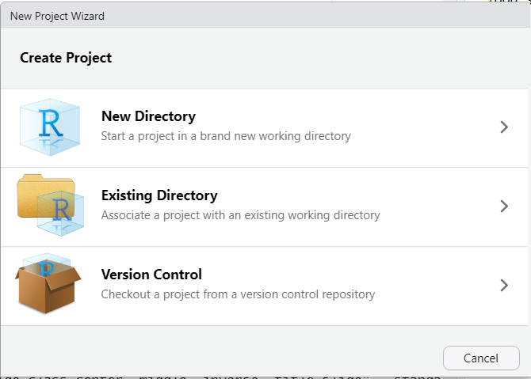
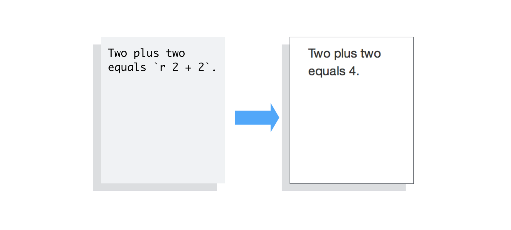
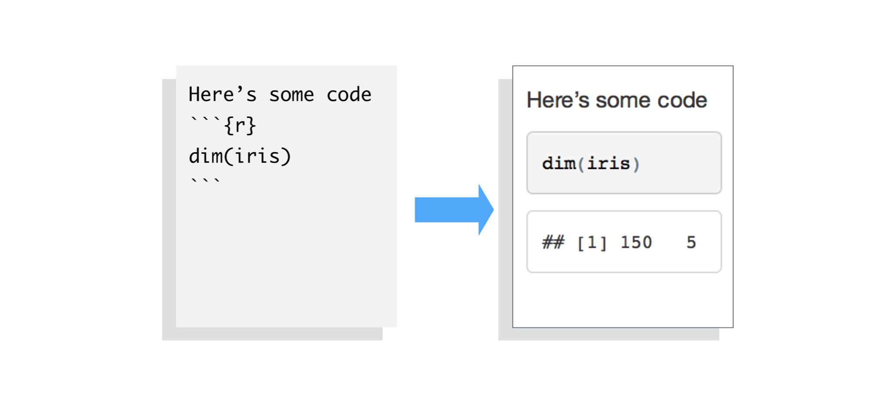
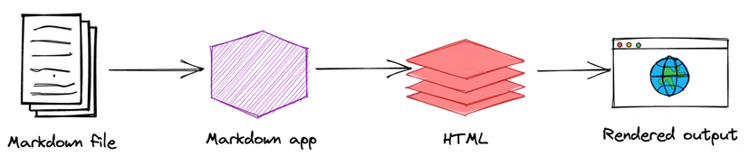
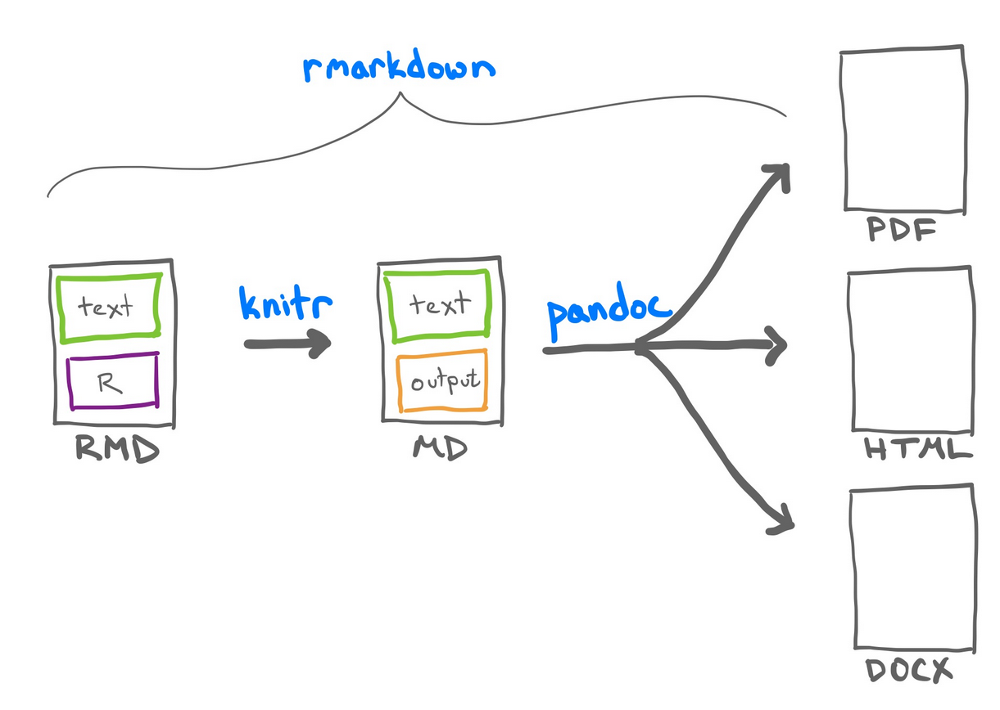
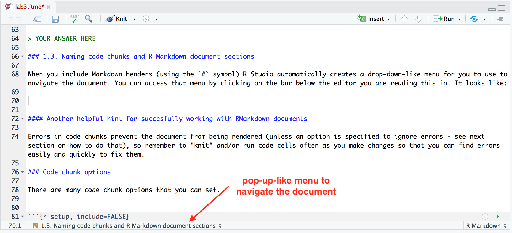
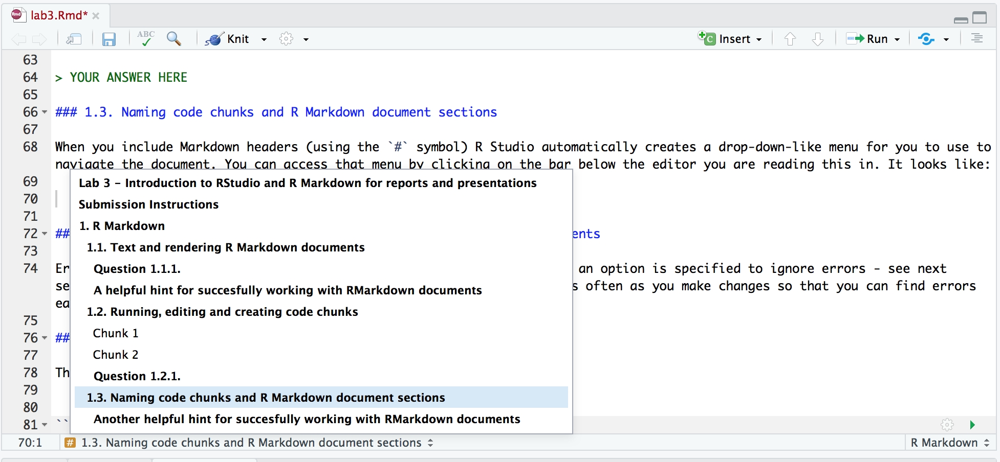

Dynamic documents: from markdown to Rmarkdown documents
Learning outcomes
- Create RProjects in Rstudio using
hereto define robust file paths. - Detect the basic components of a dynamic document in Jupyter Notebooks and in R Markdown
- Explain markdown usage in relation to dynamic documents
- Differentiate between code chunks and code cells in Rmarkdown and Jupyter Notebooks.
- Select appropiate code chunk options for RMarkdown.
- Use semantic line breaks for version control files
- Specify metadata in the YAML header block
Platform in focus RStudio IDE
Lecture 5 Activity 1
You have the following report and you have realized that there was an error in one of the calculus you did to generate it. This means that several results are going to be modified. Let’s run the scripts again and replace the plots and results affected. I hope not to have more errors! Do you think that should be other way to solve this?
RStudio
RStudio is an Interactive Development Environment (IDE), just like JupyterLab. This means it comes with some conveniences, such as code completion when pressing TAB, highlighting of syntax errors, and debugging tools. The interface is also similar to JupyterLab (and many other IDEs) as it has panels for browsing files, reading help documentation, and running code in a console. You are already familiar with the concept of many of these from running JupyterLab, but they are arranged slightly different in RStudio, so you’ll need to familiarize yourself with this new interface. While you can write both R and Python code in RStudio, we’ll use it mostly for R in MDS.
The RStudio interface
The default panel layout is shown below. You can customize where the individual panels go, and if you have opend RStudio earlier, they might not be arranged in exactly this layout. Each panel has multiple tabs and here we are highlighting the tabs we will use the most in each panel.

The “Editor” tab is where you can write R code that will be saved as a file. In contrast, the “Console” tab is where R commands are sent and evaluated by R, but any R code written here is not saved. The “Environment” tab displays the currently defined variables, providing a snapshot of your workspace. The “Files” tab allows you to navigate your file system, and this panel also includes the “Plots” and “Help” tabs, which show figures you create and provide function documentation, respectively.
R Scripts
A script is a text file that contains multiple commands that you want to be executed all together. In DSCI-511, you have seen how you can use VS Code to create Python scripts in .py files. Here, we will use RStudio to create an R script and save it in a .R file.
To create a new R Script, navigate to New File -> R Script. Write a few lines of code, e.g.
x <- 5
y <- x + 3
print(paste0("y = ", y))You can press the “Source” button to run the entire script (running a script is often referred to as “sourcing” it, hence the name). As you can see, the Console shows you what line it ran in order to source the script (you could also type this out yourself), and then displayed any output from the script in the end. You can run just part of a script by pressing the “Run” button, which runs any highlighted lines (the current line by default, the keyboard shortcut is Ctrl + Enter).
If a plot is generate from the executed code, it will show up in the “Plots” tab in the bottom left panel. You can try it by adding the following line to the script and clicking to run it (it uses a built-in data set called “cars”):
plot(cars)Editing RStudio settings to not save workspace data
By default, R asks us to save workspace data and load it when we start a new session. In general, we NEVER want to save our workspace (or load a previous one). We can avoid accidentally doing this through turning it off in the RStudio global options in the Tools menu.
Where are we?
Different from JupyterLab, when you open RStudio you open a .R or .Rmd file the RStudio, the current working directory is not neccesarily the project working directory, or the directory of the file you opened.
EVERY SESSION you need to tell RStudio where you are working. Especially if you are loading other files outside of your .R or .Rmd file.
So, where are you when you open RStudio? You can find out one of two ways:
type
getwd()in the consoleIn the files pane, click the cog/More button and then click “Go To Working Directory”
Setting the working directory
Three Ways to follow:
Way 1. Use an RStudio project: RStudio projects help organize your work and manage your files and settings. More details on RStudio projects are provided below.
Way 2. Set the working directory through the Files pane: Navigate to the desired location in your file structure using the Files pane. Once there, click the cog/More button and select “Set As Working Directory”.
Way 3. Set the working directory via the Session menu: Go to the Session menu, click “Set Working Directory”, and then choose “Choose Directory”. This will open a file browser where you can navigate to and select the desired directory.
Way 4. Set the working directory using the console: Type
setwd("PATH")in the console, replacing “PATH” with the path to your desired directory. Use this method with care, as explained in Jenny’s article on workflow vs. script.
RStudio projects
An RStudio project is essentially a directory containing a special file: *.Rproj, which holds metadata for R about this project. RProjects set the working directory by default to be the root of the project and we recommend using it together with the here() package, which can easily create paths relative to root project dir:
install.packages("here")
library(here)
# If you data is in project_root/files/data/
# this will make sure that anyone using your project
# will get the correct path
here("files", "data", "iris.csv")Creating RStudio projects
You can either create an empty RStudio project, or clone an existing GitHub repo, which also allows you to use the RStudio interface to control Git.
- Start by making a GitHub repo
- Copy the URL needed to clone that repo from GitHub
- Then select File > New Project > Version Control > Git and fill in.
Now you can use RStudio as a Git client via the colorful icon in the toolbar of the edit panel. This includes adding parts of a document do the staging area, committing, pushing, pulling, and more. Using terminal Git will still be more reliable, since it is available anywhere Git is installed, but feel free to use the RStudio (or VS Code) interfaces as a complement.

Dynamic documents with Jupyter Notebooks and RMarkdown
Our journey to understand what is a dynamic document is linked with the literate programming paradigm [2] proposed bu Knuth in 1984 [1].
I believe that the time is ripe for significantly better documentation of programs, and that we can best achieve this by considering programs to be works of literature. Hence, my title: “Literate Programming.” Let us change our traditional attitude to the construction of programs: Instead of imagining that our main task is to instruct a computer what to do, let us concentrate rather on explaining to human beings what we want a computer to do.”…
–Donald Knuth. “Literate Programming (1984)” in Literate Programming. CSLI, 1992, pg. 99.
In the literate programming paradigm, an author has two (equally important) tasks [2]: 1. write program code to do computing, and 2. write narratives to explain what is being done by the program code
Going back to our first example in lecture 5 activity 1, we could agree to only mantain the code used to generate the plots and results produced as part of the analysis. But we will also agree that this code, even if we include comments and docstrings, it is not possible to be easily read for an human. Adding a narrative to the results will not only improve the capacity to understand the analysis and serve as a detailed documentation if not will allow to easily render again the document after changes in the code.
The idea of accompanying the code with so much detailed text, was not widely adopted for software projects [3] but turn into an amazing tool for data scientists who frecquently uses these documents as reports products of their analysis. The rendering of the plots as figures next to the text in a manuscript allows giving valuable context to the visualizations.
Most of you are probably familiarized with dynamic documents as notebooks, our well known Jupyter Notebooks (.ipynb) and RMarkdown documents (.Rmd) .
From the two elements that compose the dynamic documents, there are three principal components that are the similar for Jupyter Notebooks and RMarkdown documents:
- The narrative is created with text formatted with markdown
- The code can be run and it is combined with the text in two different ways:
- Interleaved as part of the text, called inline code (only present in RMarkdown documents).
- In separated code blocks called code cells (Jupyter Notebooks) or code chunks (RMarkdown) that allow rendering code.
 example inline code in RMarkdown - https://rmarkdown.rstudio.com/articles_intro.html  example code chunk in RMarkdown - https://rmarkdown.rstudio.com/articles_intro.html
Lecture 5 Activity 2
Let’s go back to the document of the first activity. (1) Convert it in a dynamic document using RMarkdown (2) Are .Rmd documents technically considered notebooks?
RMarkdown
The overriding design goal for Markdown’s formatting syntax is to make it as readable as possible. The idea is that a Markdown-formatted document should be publishable as-is, as plain text, without looking like it’s been marked up with tags or formatting instructions. –John Gruber
Jupyter Notebooks and RMarkdown documents use markdown to format the text, but markdown has it’s own identity! You already known markdown files really well, at least you are using them as the README.md file of most of the project you have created. Let’s start by describing it and then we can talk about RMarkdown.
Markdown is basically a markup language that you can use to add formatting elements to easy to read plain-text text documents [4,5]. Markdown files have their own file extension (.md) that could be easily converted to HTML and because of that, rendered as a web page.
Now we can start to understand markdown power:
Its simple formatting syntax allows translation of content to
HTMLwithout having to be an expert.It is human readable. Compare markdown and
HTML, which one is easier to understand by reading only the code?It is a plain-text document. This means that it is open by mostly any editor, making
.mdfiles quite reproducible.
Converting the .md files to HTML documents (.html) involves the use of specific designed software for that purpuse. One of the most popular markdown converters is called pandoc. Pandoc can not only convert markdown to HTML if not to other popular and widely used formats as Word documents (.docx) and PDFs (.pdf).
If your goal is to render the final HTML document, keep in mind that you will need an extra step to view the file in a web browser. Also, HTML documents can not only be render as web pages, you can create with them blogs, books, articles. At the end of lecture 8 we will learn how to use GitHub Pages to render part of the HTML documents that we are going to generate. Therefore, some editors as RStudio, JupyterLab and VS Code will resume many steps at the same time rendering and displaying the .md file directly on the console. GitHub does something similar with the README.md file that appears automatically rendered as the first page of your GitHub repository.
 Image extracted from: https://www.markdownguide.org/getting-started/
Lecture 5 Activity 3
work in pairs
Let’s have a quick reminder of markdown. How would you recreate a potential original Markdown file of the following HTML document? How can you check if you have done it correctly?
Markdown and its flavours
We love markdown! But not all are good news…
First, we will mention that the official markdown syntax documentation is not unambiguosly specified. What does this means? That there some implementations of markdown have diverged [6]. Meaning that the same markdown syntax can render different outputs in relation to the technology you are using. How a README.md file renders on GitHub could not be equal as how it will look like after being converted by pandoc. The webpage Babelmark III enable to detect this differences through many implementations, also listing some of the most well known pitfalls.
Secondly, other way in which Markdown has diverged it is reflected in the number of extensions. This means that there is specific markdown syntax created for some implementations that will not work for other technologies.
Don’t panic! In MDS we handle a limited number of markdown flavours (in order of appeareance in DSCI 521):
Jupyter Notebook (and Jupyter Book) Markdown: is an extension of a Markdown flavour called CommonMark Markdown. If you completed the tutorial that we were recommending on lecture 0 you have some practice on it! https://commonmark.org/help/tutorial/
GitHub flavoured Markdown. To write issues, pull request, render your
README.mdfile in the first page of your repository you will be using this Markdown flavour. It is a (different) extension of the CommonMark Spec also used for Jupyter Notebooks.
Read how to use it here!
- R Markdown documents. R Markdown is an implementation of Pandoc Markdown (with a wide list of interesting extensions!)
Don’t panic! The important take-home message of this is that you should always check the documentation of the technology you are using. Even if for most of the cases could be quite similar, there is not an universal markdown cheatsheet or proceeding that will possible to be used with all of them!
A good practice when writting in markdown: semantic line breaks
Hints for Preparing Documents
Most documents go through several versions (always more than you expected) before they are finally finished. Accordingly, you should do whatever possible to make the job of changing them easy.
First, when you do the purely mechanical operations of typing, type so subsequent editing will be easy. Start each sentence on a new line. Make lines short, and break lines at natural places, such as after commas and semicolons, rather than randomly. Since most people change documents by rewriting phrases and adding, deleting and rearranging sentences, these precautions simplify any editing you have to do later.
— Brian W. Kernighan, 1974 [9]
You need 2 spaces to create a line break using markdown. This means that you can actually break a line without creating a line break in the rendered file.
The use of shorter phrases could be a benefit when you are version controlling files.
Lecture 5 Activity 4
- Check the documentation of Pandoc Markdown and GitHub Flavour Markdown. Find an example that will render on gitHub but nor in RMarkdown and/or viceversa. Will emojis work in R Markdown? You can use Babelmark III to check this (be careful because it is not updated, better to check directly on GitHub and R Markdown)
Text and rendering R Markdown documents
In a R Markdown document any line of text not in a code chunk (like this line of text) will be formatted using Markdown. Similar to JupyterLab, you can also use HTML and LaTeX here to do more advanced formatting. Unlike JupyterLab, you do not get to see these Markdown sections rendered on their own. To see this text rendered, you need to render the whole document. You can do that clicking the “Knit” or “Preview” button on the top. The difference between these two is that “Preview” creates a HTML version of your document as it looks right now, whereas “Knit” first restarts the R session and runs through the entire document from the beginning to make sure it will work when you send it to someone else.
A helpful hint for successfully working with R Markdown documents
Given that you need to render the entire document to see your Markdown and LaTeX rendered, it is important to “knit” often as you make changes. If you make an error in a LaTeX equation for example, it will stop the knitting/rendering process and you will not get to see the rendered document. So by knitting/rendering often you will know where the last changes you made are and then will be able to easily identify and fix your errors.
R Markdown (.Rmd) -> Markdown (.md)
Analogous to the Jupyter Notebook cells, the R Markdown code chunks after being render will be embedded in your final report.
When you run render, R Markdown feeds the .Rmd file to knitr, which executes all of the code chunks and creates a new markdown (.md) document containing the code and its outputs.
The markdown file generated by knitr is then processed by pandoc which is responsible for creating the finished format.
 Rmarkdown documents are created from text and R code
Lecture 5 Activity 5
- Go back to the
.mdfile from the activity 3. Can you recreate the.Rmdfile that will generate the sameHTMLwhen rendered?
You can check that this is true running the following line of code rmarkdown::render("lecture7_example.Rmd", clean = FALSE) adding the argument clean = FALSE will keep the intermidiate file lecture7_example.knit.md created by knitr.
- Can you think of advantages of using the
.Rmdinstead of the.mdfile to create the finalHTMLdocument?
R Markdown and R Notebooks
R Markdown is a “flavor” of Markdown that allows you to run R code in addition to supporting all the Markdown syntax that you have already learned. R Markdown documents (.Rmd) are most commonly run via R Notebooks which work similarly to Jupyter notebooks in the sense that you can interleave writing code, formatted narrative text, and view output all in the same document. These are both examples of what it called “literate programming” where the goal is to mix code and paragraph text seamlessly.
Let’s see an example of this by creating a new R Notebook via File -> New -> R Notebook. As you can see, there is a default template for Notebooks, which include useful info on how to use them. We can see the keyboard shortcuts for running and inserting cells, and when we execute the plot code the plot shows up inside the notebook rather than in the side panel as when we ran the same line from within the script script.
Lecture 5 Activity 6
Is it the same an Rnotebook than a .Rmd document?
1.2. Running, editing and creating code chunks
Just like Jupyter notebooks, R Markdown has code cells, although they’re more commonly referred to as code “chunks” or “blocks”. These are based off fenced Markdown code blocks and always start and end with 3 backticks (```), just like in Markdown. Unique to R Markdown is that the leading three backticks are followed by curly braces containing the language engine you want to run, which for r looks like this {r}. Additional metadata can be included, for example a name to reference the code chunk:
```{r my first code chunk}
x <- 5
x
```There are other language engines that can be used in RMarkdown, you can learn more about that here.
All code cells are run when you knit/render the entire document (like pressing “Run all” in JupyterLab). By default, the code in the chunk and the code output will be included in your rendered document. You can also run the code by clicking the green play button on the right-hand side of the code chunk.
Lecture 5 Activity 7
Clone this folder and try to render de .Rmd file. What happen? Try to use here() for the filepath
1.3. Naming code chunks and R Markdown document sections
When you include Markdown headers (using the # symbol) R Studio automatically creates a pop-up-like menu for you to use to navigate the document, which you can access by clicking the bar below this editor panel. It looks like:


By clicking on any of the headings in the pop-up-like menu, RStudio will navigate you to that section of the R Markdown document. Try clicking on one to see how it works.
In addition to Markdown headings, RStudio also keeps track of code chunks in that menu. By default RStudio names the chunks by their position (e.g. Chunk 1, Chunk 2, etc). But in reality those names are not that useful and it is more helpful to give code chunks meaningful names. For example, in the code chunk below where we use a for loop to sum the numbers from 1 to 10, we name the chunk “for loop sum”.
```{r for loop sum}
# initialize sum to 0
loop_sum <- 0
# loop of a sequence from 1 to 10 and calculate the sum
for (i in seq(1:10)){
loop_sum <- loop_sum + i
}
print(loop_sum)
```Lecture 5 Activity 8
lecture7_act6.Rmd it is not rendering. Can you fix it?
Do not duplicate code chunk names, this will break the rendering of your document!
1.4. Code chunk options
There are many code chunk options that you can set. These options let you customize chunk behavior, including whether a chunk is evaluated, whether to include the output in the rendered document, etc. A short list of code chunk options is shown below, but you can find an extensive list starting on the second page of this document.

You can set the chunk options at either a global level (once set they will be applied to all code chunks in the .Rmd file) or locally for a specific chunk (these will override the global chunk options if they are contradictory).
Global options are usually set in one chunk at the top of the document and looks like this (this is a screenshot):
```{r setup, include=FALSE}
knitr::opts_chunk$set(echo = FALSE)
```Global chunk options are set by adding them as arguments to knitr::opts_chunk$set(...) (put them in place of ... and separate multiple options with a comma). The only global chunk options set in this document is echo = FALSE, which hides the code chunks and only shows the output, something that can be useful for non-technical reports.
Local chunk options are set by adding the options in the curly braces of a code chunk after the language engine and code chunk name. For example, to not display warnings in a single code chunk we would use the warning = FALSE code chunk as follows:
```{r correlation no warning, warning = FALSE}
# some R code that throws a warning
cor( c( 1 , 1 ), c( 2 , 3 ) )
```A few tips and tricks
R Markdown support inline evaluated code via the following syntax
Adding 3 to 4 gives `r 4 + 3`. The value of `x` is currently `r x`.Latex equations can be written the same way as in Jupyter notebooks and standard markdown documents. -
$\alpha = 5$for inline latex and$$\alpha = 5$$for a math block. - When hovering over equations, R will display the rendered equation in a pop up.R Markdown is built upon the Pandoc Markdown engine. This is useful to know since the Pandoc manual is a great exhaustive resource for looking up anything Markdown related.
One of the features made available thanks to Pandoc is support for citations and bibliographies.
- Let’s cite the R-package by typing
citation()into the console, and copying the BibTex citation into a new document that we callrstudio-demo.bib and adding an identifier string (a key) before the first comma, e.g.r-lang`. - Include the following field in the YAML metadata in the beginning of the document:
bibliography: rstudio-demo.bib, then cite it somewhere in the text by adding[@r-lang]. The bibliography will be appended to the document, so it is advisable to add a heading saying# Referencesat the very end.
- Let’s cite the R-package by typing
When working with R Markdown (and code in general) be careful that you don’t copy stylized quotation marks because these will not work. For example, this will throw an error:
a = “This string”It should look like this instead:
a = "This string"
R Markdown templates
We have seen how to use the output formats html_document and pdf_document, but as noted in lab3 during the lab, there are many more. A commonly used one is github_document, which both saves a .md markdown file and creates a temporary .html files for preview of how it will look on GitHub, which is stored in a temporary folder and later deleted. This format does not have as many options as HTML, and you can use it like this:
output: github_documentAnother way of creating a a github_document is to go to New -> R Markdown -> From Template -> GitHub Document. As you can see there are other useful templates here. We will see how to create a presentation soon, but first lets see how to work with a word template. A word document can be created with this YAML header:
output: word_documentWe can modify the style of a word document by opening one of our previously exported word files (it must have been created with R Studio / Pandoc), changing the styling options as shown here, saving this under a new name, and then using it as a template:
output:
word_document:
reference_docx: "our-style-doc.docx"There are more details in this article, including how to create your own custom template, for example for a CV.
Lecture 5 Activity 9
What would you use the github_document option for?
References
1 - D. E. Knuth, Literate Programming, The Computer Journal, Volume 27, Issue 2, 1984, Pages 97–111, https://doi.org/10.1093/comjnl/27.2.97 2 - Y. Xie Dynamic Documents with R and knitr 3 - 4 - https://www.markdownguide.org/ 5- https://daringfireball.net/projects/markdown/ 6 - https://babelmark.github.io/faq/ 7 - RStudio Conf 2022 - Quarto Workshop 8 - 9 - https://rhodesmill.org/brandon/2012/one-sentence-per-line/ UNIX for Beginners
NOT INCLUDED FOR NOW:
Code snippets
As we started to type for above, the code completion popped up and the first entry said “snippet”, what is that? A code snippet is a text macro, which means that you can type a short string of characters to insert a template or snippet of text by pressing TAB. You can see all the default snippets and define your own by going to Tools -> Global options -> Code -> Edit snippets. Snippets are available anywhere in RStudio, not just in R Markdown documents.